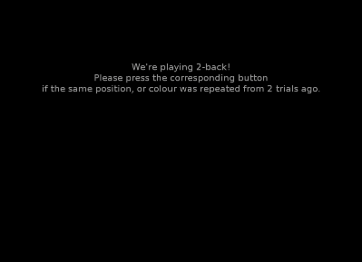

Configuration#
Experiment Design#
The experiment design is covered in the [DESIGN] section of the config file.
[DESIGN] ## number of blocks blocks = 3 ## all of the following values can be one of these values to ## repeat for all blocks, or as many values as there ## are blocks and separated by commas; in case of two blocks: ## e.g. target_titles = 123 OR target_titles = 123, abc ## three values for two blocks or vice versa causes an error ## amount of trials (i.e. trails to make per block) trials = 20 ## default numbers of trials to look back at nback = 2 ## default mode, string with any one or more of PC ## P = Position ## C = Colour nback_mode = PC ## probability of having one characteristic repeated repeat_probability = 0.3 ## after here everything is universal for all blocks again ## number of boxes in the grid; they will be arranged in a ## square, so a square number is advantageous num_boxes = 9 ## colours to vary, can be any of: black, blue, darkgrey, ## expyriment_orange, expyriment_purple, green, grey, red, ## white, yellow, cyan, magenta or RGB colour codes such as ## (255, 0, 0) for red, separated by commas colours = magenta, green, cyan ## the duration of stimuli display [ms] display_duration = 3000 ## min and max duration of the break in between to stimuli [ms] break_duration = 500, 2000
Optional values and their default values are:
## indicate whether or not to change the NBack level change_nback_level = no ## lower threshold of the ratio of trials that have to be ## correct, after which the NBack level is increased ## (checked as bigger or equal than) increase_nback_correct_ratio = 0.8 ## upper threshold of the ratio of trials that have to be ## correct, after which the NBack level is decreased ## (checked as smaller than) decrease_nback_correct_ratio = 0.5
Appearance#
The experiment appearance is covered in the [APPEARANCE] section of the configuration file; there are no required arguments.
In the following, the default options are listed.
[APPEARANCE] ## size of the grid relative to smallest screen dimension ## the button_height will be reduced on either side of the ## screen so it is centred canvas_size = 0.9 ## line width for the grid to be drawn grid_line_width = 1mm ## set antialiasing so that things appear a bit sharper antialiasing = True ## the colour of grid and fixation cross colour_grid = (255, 255, 255) colour_fixation_cross = None ## the height of the buttons to be pressed; ## the width will be based on the screen width divided by the ## amount of labels button_height = 20mm ## background, border, and text colour of the button button_background_colour = (0, 0, 0) button_border_colour = (80, 80, 80) button_text_colour = white ## the button is highlighted when pressed; this defines the ## highlighting colour (for the inner edges) ## as well as the duration [ms] button_highlight_colour = (255, 255, 255) button_highlight_duration = 50
Logging the Experiment#
What should be logged is described in the [LOG] section of the configuration file.
For a general overview on their configuration, see here.
The available fields that can be logged are as follows:
- settings for the block:
nback,nback_mode,trials,repeat_probability - computed data per trial:
P(position of the stimulus),C(colour of the stimulus),wait(time before stimulus is shown),repeat(whether and which a component is repeated) - the user response:
rt(reaction time),pressed_any(0/1, whether any button was pressed),pressed(which button was pressed) - analyses of the user response:
correct(0/1),incorrect(0/1)correct_repeat(0/1, whether a repeat trial was correctly identified)falsebutton(0/1, whether a false button was pressed)missedpositive(0/1, whether a repeat trial was missed)falsepositive(0/1, whether a button was pressed although it should not have been)
Example#
A screencast of the N-Back Task with standard settings and 5 trials.
